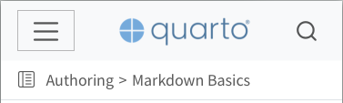
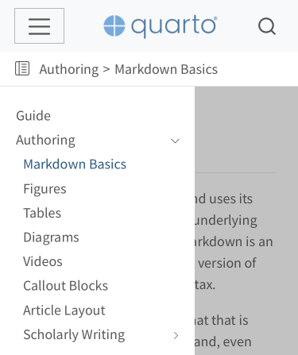

Responsive Website Navigation Improvements
Navbar Tools
The navbar can now display a set of tools (e.g. social actions, GitHub view or edit actions, etc.), see Navbar Tools.
Responsive Navbar
We’ve updated the responsive behavior of the navbar to improve the usability of Quarto websites on mobile devices. Changes include:
When the items in a navbar collapse into a menu, we’ve moved the ‘hamburger’ button which controls the menu to the right side of the navbar. This makes it easier to access the menu on mobile devices.
When the items in a navbar collapse into a menu, we place the search icon on right side of the navbar (rather than placing in the collapsed menu). This makes search always available, even when on small screens.

Responsive Sidebar
We’ve updated the responsive behavior of the sidebar to improve the usability of Quarto websites on mobile devices. Changes include:
The collapsed sidebar now appears as a vertically smaller band which includes a ‘sidebar’ icon on the left side. Clicking this icon will expand the sidebar to full width. In addition, this collapsed view includes ‘breadcrumbs’ for the current page which allow simple navigation up the hierarchy.
When revealed, the sidebar will now animate from the side of the screen.
